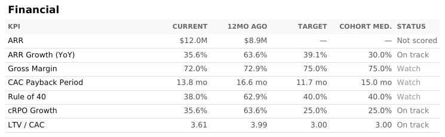
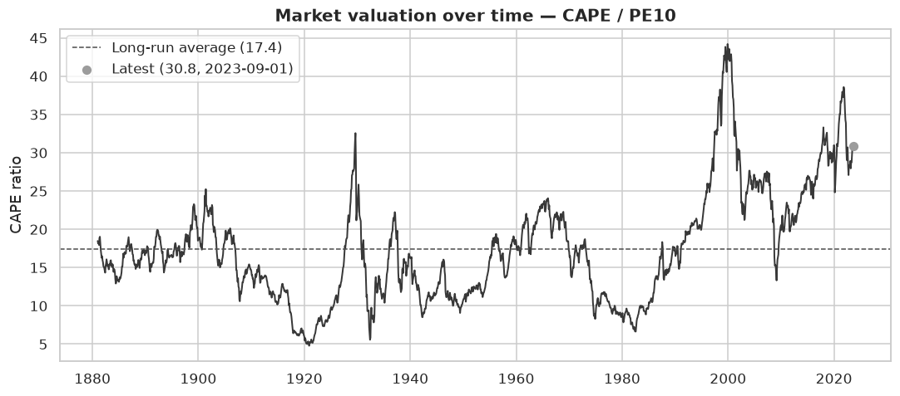

MasterBI
I built a spreadsheet-to-report tool that generates a dashboard, PDF, and editable PowerPoint from the same analysis.

Data & Automation Analyst · Berlin
I built a spreadsheet-to-report tool that generates a dashboard, PDF, and editable PowerPoint from the same analysis.

I built a prototype for UNDP to compare national climate commitments and trace findings to their source pages.
| Country | Climate | Disaster risk | Energy |
|---|---|---|---|
| Belarus | 68 | 8 | 18 |
| Kazakhstan | 8 | 81 | 92 |
| Türkiye | 82 | 69 | 33 |
I used Python and SQL to compare valuations and long-term returns. The association was weaker across non-overlapping decades.
